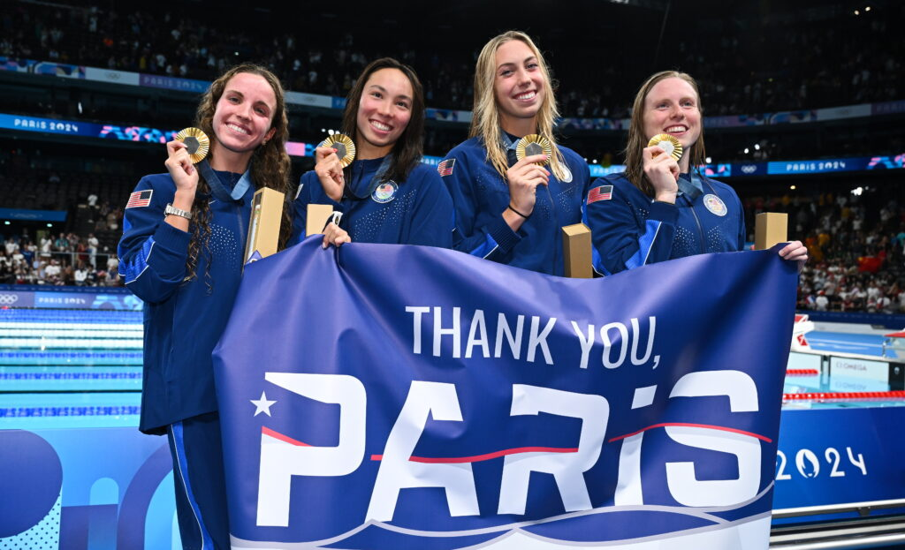

The swimming events for the 2024 Summer Olympics began on July 27th, with Women's 100 butterfly leading it off. The United States would take it's first Gold
Medal with the Men's 100m freestyle relay. Afterwards, the women would then win the majority of the gold medals for team USA, winning a total of 5 out of the 8
gold medals won. These events included the Women's 100m butterfly, Women's 1500m freestyle, Women's 200m Breaststroke, Women's 800m freestyle, and ending it off
with the Women's 100m realy where Regan Smith, Lilly King, Gretchen Walsh, and Torri Huske would break the world record. The men won a total of two gold medals,
one being the one previously stated above, and the other being the Men's 1500m freestyle, where Bobby Finke would take world record. The Men and Women would then
come together to win the 100m mixed relay event, getting the gold medal. The results for each one of these swims can be found below in table.

Men's 4 x 100m Freestyle Relay Final
| Team |
Time |
| USA |
3:09.28 |
| AUS |
3:10.35 |
| ITA |
3:10.70 |
Women's 100m Butterfly Final
| Athlete |
Time |
| Torri Huske |
55.59 |
| Gretchen Walsh |
55.63 |
| Yufei Zhang |
56.21 |
Women's 1500m Freestyle Final
| Athlete |
Time |
| Katie Ledecky |
15:30.02 |
| Anastasiia Kirpichnikova |
15:40.35 |
| Isabel Gose |
15:41.16 |
Women's 200m Breaststroke Final
| Athlete |
Time |
| Kate Douglass |
2:19.24 |
| Tatjana Smith |
2:19.60 |
| Tes Schouten |
2:21.05 |
Women's 800m Freestyle Final
| Athlete |
Time |
| Katie Ledecky |
8:11.04 |
| Ariarne Titmus |
8:12.29 |
| Paige Madden |
8:13.00 |
Mixed 4 x 100m Medley Relay Final
| Team |
Time |
| USA |
3:37.43 |
| CHN |
3:37.55 |
| AUS |
3:38.76 |
Men's 1500m Freestyle Final
| Athlete |
Time |
| Bobby Finke |
14:30.67 |
| Gregorio Paltrinieri |
14:34.55 |
| Daniel Wiffen |
14:39.63 |
Women's 4 x 100m Medley Relay Final
| Team |
Time |
| USA |
3:49.63 |
| AUS |
3:53.11 |
| CHN |
3:53.23 |